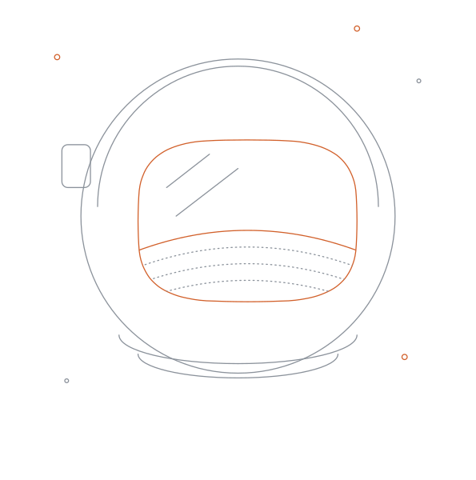

About
I am a full stack software engineer with a Master’s in Computer Science from INSA Hauts-de-France. I mostly write TypeScript: Angular and Ionic on the client, NestJS and PostgreSQL on the server, and React Native for mobile.
Before code, there was design: three years of a multimedia degree in Meaux. That is where I got used to testing an interface with the people who will use it. Then BTP-360: during my final-year internship, on my own, an app in production for four companies.
Now I am looking for my first permanent role. I am based in Troyes, ready to relocate, and open to hybrid or remote work.

How I work

Start with people
I think first about the people who will use the tool, on a building site or with a VR headset on, and only then about the stack. My design degree taught me to test an interface with the people who will use it.

Write everything down
Documentation, decisions, tests. Alone on BTP-360, that is what let me move fast without breaking what already worked.

The AI writes fast, I decide
I code with agents (Claude Code, Codex). I frame the need, write the spec, review every diff like a colleague’s, and decide what goes to production.
Path
-
2021Troyes
The spark
A technology baccalaureate (STI2D, digital systems option) at Saint-Joseph La Salle. I write my first programs there.
-
2021Meaux
The design detour
Three years in Meaux for a multimedia degree: code, UX, video, graphic design.
-
2022Troyes
My first business tool
Two months as an admin assistant at Ophta Médical. Looking at the team’s schedule, I built a sheet that works out everyone’s hours and overtime.
« He brought us ideas to complete our staff schedule, creating a sheet that calculates daily working hours and shows each employee’s overtime. »
-
2023Saint-André-les-Vergers
First website shipped at a company
Three months at Réseau Sûr France to ship their new website, with the marketing team and requests that changed until the very end.
Réseau Sûr France« Ziyad showed his skills and know-how throughout his internship. He adapted very quickly to the company, its brand guidelines and the way it works. »
-
2023Troyes
Ten months of e-commerce
As a work-study student at Distri Sûr France, I designed and built the online shop, from Figma mockups to launch on Odoo.
Distri Sûr France -
2024Valenciennes
Heading for the metaverse
A Master’s in Metaverse Science and Technology at INSA Hauts-de-France: VR, AI, mobile, blockchain, big data. And the school’s esports team between deadlines.
Virtual reality -
2026Troyes
BTP-360, on my own
Final-year internship at Iso Sûr France: replacing the Excel files of four companies with a single app, web and Android, in production on AWS.
BTP-360 -
2026Troyes
And now
Graduated and back in Troyes, I am looking for my first permanent full stack role. SubForge keeps moving on the side.
SubForge
Languages
- French bilingual
- Arabic native
- English C1
- Spanish basic
Away from the screen: semi-pro esports with the INSA team, guitar and singing, photography, weight training (hence SubForge) and manga, JoJo’s Bizarre Adventure first (enough to make an animated ad).
Stack
Each tool leads to the project that proves it. Filled: used in production. Outlined: used in projects.
Front end and mobile
- Angularproven by BTP-360, in production
- Ionicproven by BTP-360, in production
- NgRxproven by BTP-360, in production
- Capacitorproven by BTP-360, in production
- TypeScriptproven by BTP-360, SubForge, in production
- RxJSproven by BTP-360, in production
- React Nativeproven by SubForge, in projects
- Expoproven by SubForge, in projects
- Tailwindproven by Turaty Naturels, in projects
- Android (Java)proven by lolop, in projects
- Kotlinproven by Facture Android, in projects
Back end and data
- NestJSproven by BTP-360, in production
- Prismaproven by BTP-360, in production
- PostgreSQLproven by BTP-360, SubForge, in production
- Socket.IOproven by BTP-360, SUBCHAINE, in production
- Supabaseproven by SubForge, in projects
- Node.jsproven by ZABI, SUBCHAINE, in projects
- MongoDBproven by ZABI, in projects
- Symfonyproven by Turaty Naturels, Article manager, in projects
- MySQLproven by Turaty Naturels, Article manager, in projects
- Odooproven by Distri Sûr France, in production
- Pythonproven by Prénoms et Hadoop, Wifi auto, in projects
Applied AI
- Coding agents (Claude Code, Codex)proven by BTP-360, in production
- Reviewing AI-generated codeproven by BTP-360, in production
- Multi-agent workflowproven by BTP-360, in production
- MCPproven by BTP-360, in production
- Local OCR (ML Kit, PaddleOCR, Tesseract.js)proven by BTP-360, in production
- LLM integration (Gemini)proven by SubForge, in projects
Shipping and quality
- Dockerproven by BTP-360, Turaty Naturels, in production
- AWSproven by BTP-360, in production
- Terraformproven by BTP-360, in production
- GitHub Actionsproven by BTP-360, in production
- Playwrightproven by BTP-360, in production
- Jestproven by SubForge, in projects
- Sentryproven by BTP-360, SubForge, in production
- Azureproven by Hôtel : gestion et paie, in projects